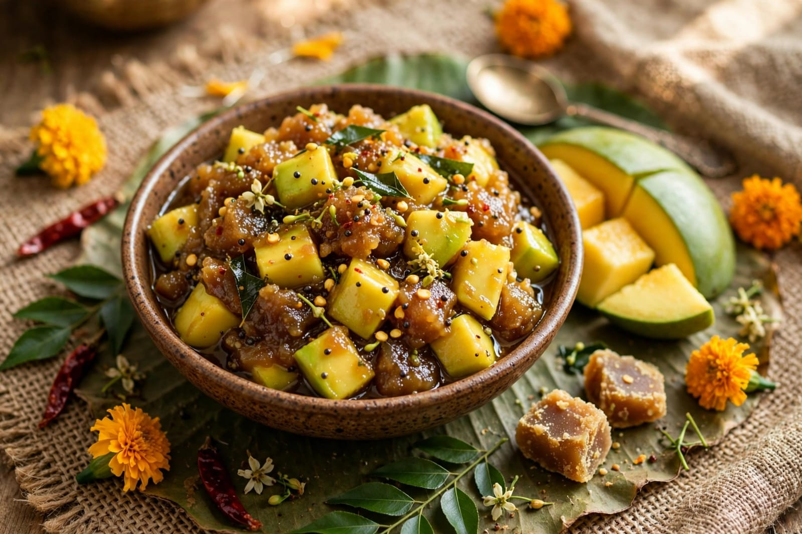
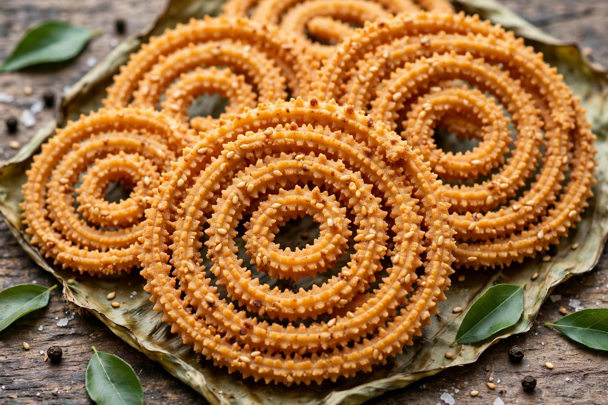
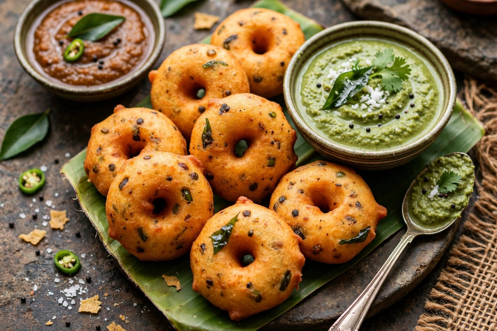

About Puthandu
Puthandu is the traditional Tamil New Year festival celebrated mainly in Tamil Nadu and by Tamil communities in different parts of the world. It marks the beginning of a new year according to the Tamil calendar. The festival is celebrated with happiness, prayers, family gatherings and traditional customs. People clean and decorate their homes and prepare special food for the occasion.
An important tradition of Puthandu is viewing the auspicious arrangement called Kanni. It may include fruits, flowers, jewellery, mirrors, betel leaves and other valuable items. People believe that seeing these auspicious objects at the beginning of the new year brings prosperity and happiness. Colourful kolam designs are also created in front of homes.
On Puthandu, people wear new clothes, visit temples and seek blessings from elders. Families prepare traditional dishes and share them with relatives and friends. One special dish is Mangai Pachadi, which combines different tastes and is associated with the experiences of life. Cultural programmes and traditional celebrations are also held in many places. Puthandu represents a fresh beginning, hope and prosperity.
Special Foods

Manga Pachadi
Manga Pachadi is a traditional Tamil New Year dish made with raw mango and jaggery.

Murukku
Murukku is a crispy traditional snack enjoyed during celebrations.

Vadai
Vadai is a popular South Indian snack prepared for special occasions.